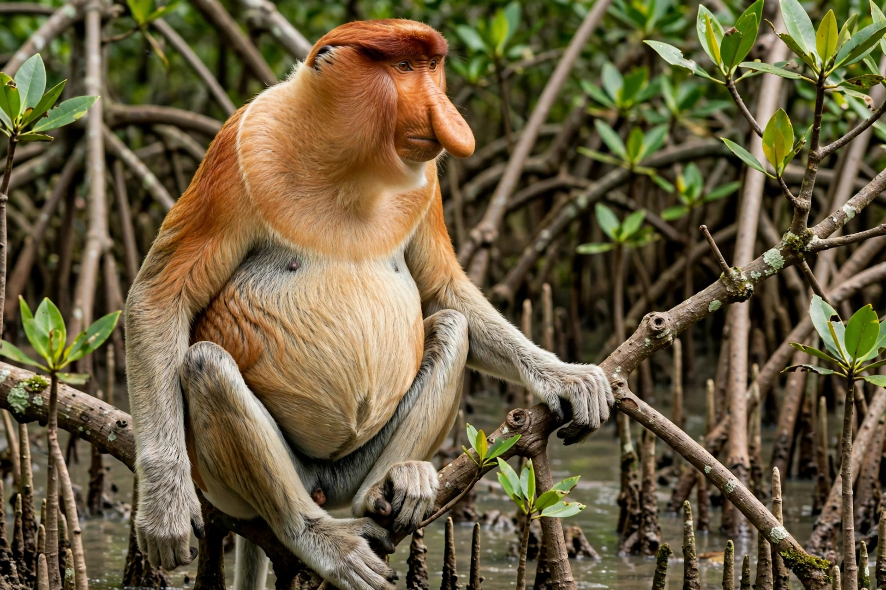

| Proboscis monkey | |
|---|---|
| Conservation status | Endangered (IUCN) |
| Kingdom | Animalia |
| Phylum | Chordata |
| Class | Mammalia |
| Order | Primates |
| Family | Cercopithecidae |
| Genus | Nasalis |
| Species | N. larvatus |
The proboscis monkey (Nasalis larvatus) or long-nosed monkey is an arboreal Old World monkey with an unusually large nose, a reddish-brown skin color and a long tail. It is endemic to the southeast Asian island of Borneo and is found mostly in mangrove forests and on the coastal areas of the island.

The proboscis monkey is among the largest monkey species native to Asia. Males are considerably larger than females, weighing up to about 23 kg, and are distinguished by their enormous pendulous noses, which can exceed 10 cm in length and are thought to act as resonating chambers that amplify vocalisations and signal status. Both sexes have pot bellies, a result of their large, multi-chambered stomachs, which house bacteria that ferment the leaves they eat and neutralise plant toxins.
Proboscis monkeys live in groups — either harems of one male with several females and their offspring, or bachelor groups of all males. They are strong swimmers, with partially webbed feet, and wade or swim across rivers to reach feeding sites; they may leap into water from branches to escape predators such as clouded leopards and false gharials. Their diet consists mainly of leaves, especially of mangrove trees, supplemented by unripe fruit and seeds.
The species is listed as Endangered by the IUCN. Its population has declined sharply owing to habitat loss — particularly the clearing of mangrove and riverine forest for oil palm plantations and shrimp farms — and hunting. It is protected in reserves such as Bako National Park in Sarawak.